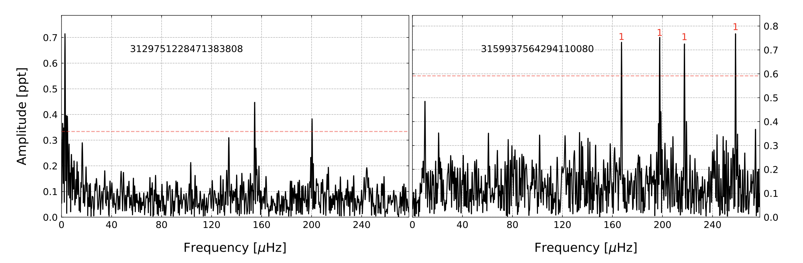
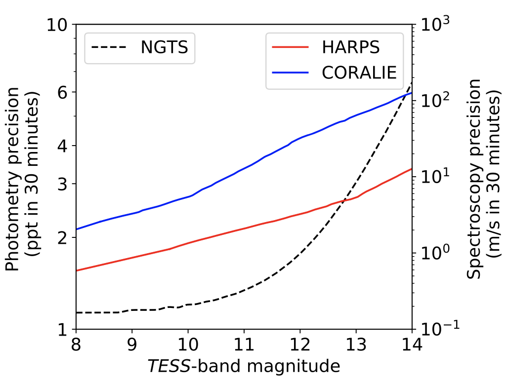

STATUS UPDATE: New FFI light curves have been created and are now available on MAST!
Welcome TESS followers to our weekly news bulletin. This week we have four papers from the archive, two of which highlighting a new data product available on MAST!
A search for variable subdwarf B stars in TESS Full Frame Images -- I. Variable objects in the southern ecliptic hemisphere (Sahoo et. al., 2020):
Using TESS Full Frame Images, the authors search for pulsating subdwarf B stars observed in the first year of the primary mission. These observations cover most of the southern ecliptic hemisphere and are of a 30 minute cadence.
Within their search the authors find only two pulsating subdwarf B stars, but as a byproduct of their work they detect 1807 variable objects. Of these objects most are unclassified but 26 are variables with known sdB spectra, 83 are non-classified pulsating stars, an additional 83 are eclipsing binaries (detached and semi-detached), a mix of 1535 pulsators and non-eclipsing binaries, two novae, and 77 variables with known (non-sdB) spectral classification.
From the eclipsing binary sample two known HW Vir systems were found in addition to four new candidates. The two sdB pulsators investigated were not rich in modes, but estimates of the modal degree for one of them were derived. The authors select five sdB candidates from the 83 pulsators, for mode identification.
Resolving period aliases for TESS monotransits recovered during the extended mission (Cooke et. al., 2020):
In this paper the authors explore how to avoid the number of period aliases for transiting TESS systems which have two transits separated by a period on the order of years.
The analysis was conducted using simulated TESS primary and extended mission data, in addition to simulated data for NGTS photometry and HARPS+CORALIE spectroscopy.
The authors determined that TESS will find ~400 exoplanets with one transit in each of the primary and extended missions. Given the TESS temporal coverage, each of the systems will have roughly 38 period aliases. Utilizing the additional photometric and spectroscopic resources simulated for NGTS and CORALIE, it was determined that the true aliases could be found and the period obtained if there were an observation campaign with these facilities that spanned 50 days. The number of systems whoes periods could be accurately determined increase to 207 if additional observing campaigns are employed using HARPS.
TESS Science Processing Operations Center FFI Target List Products (Caldwell et. al., 2020):
TESS-SPOC light curves for up to 160,000 targets from each Sector using the TESS Full Frame Images have been generated. The team provides detrended light curves, target pixel files, and co-trending basis vectors for select targets at 30-minute cadence from the FFIs.
The initial release contains more than a million light curves from Sectors 14-26. More Sectors are expected to be released in the future. Note bulk files are available for Sectors 14-26 now, while individual objects are being ingested into Portal and the MAST API in an ongoing process. A status table is available on the TESS-SPOC HLSP page.
Photometry of 10 Million Stars from the First Two Years of TESS Full Frame Images (Huang et. al., 2020):
More than 24 million de-trended light curves from the MIT Quick Look Pipeline have been created using TESS Full Frame Images. Light curves are available in FITS and text format.
Bulk downloads are available for Sectors 11-26 now, Sectors 1-10 will be available within the next week. Ingest of individual objects into Portal and MAST API is ongoing as of now, check the status of specific Sectors using the table on the MAST QLP page. QLP light curves from the Extended Mission (Sector 27 and onward) are expected in the near future. Look here for more information.

Fig 1. Taken from Sahoo et. al., (2020). The amplitude spectra of the two sdBV stars. The horizontal red dashed line indicates 4.5 sigma detection threshold. In the right panel the guesses on the model degree based on the period spacing is shown.

Fig 2. Taken from Cooke et. al., (2020). The instrumental precision as a function of target TESS magnitude for NGTS, HARPS, and CORALIE.